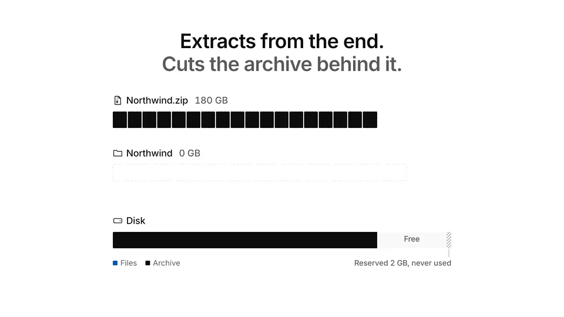
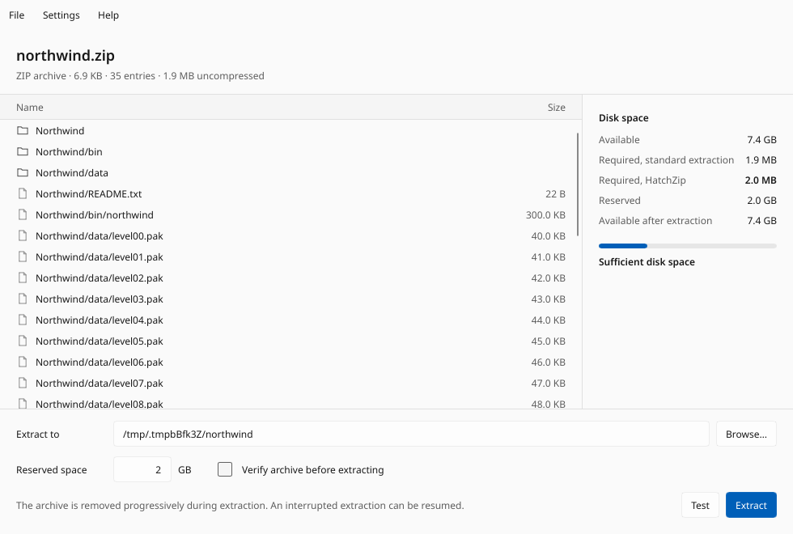

HatchZip
Extract huge archives without needing double the disk space.
A 180 GB archive that unpacks to 200 GB needs 380 GB of disk with WinRAR, 7-Zip or unzip, because the archive and the extracted files have to exist at the same time. HatchZip needs a little over 200 GB: it extracts from the end of the archive and cuts each finished part off the archive file, so the space comes back as it goes.
Free and open source, for Windows, macOS and Linux.

Download
Windows 10 and 11, 64-bit. The macOS download is for Macs with Apple Silicon (M1 and later); for an older Intel Mac, get the Intel version. The Linux download is an AppImage that runs on most distributions; .deb and .rpm packages are below.
How to use it
- Install it. HatchZip is not code-signed yet, so Windows may show "Windows protected your PC": choose More info, then Run anyway. On a Mac, open the app once, then allow it in System Settings, Privacy & Security.
- Right-click the archive, choose HatchZip, then Extract here (Windows and Linux). On Windows 11 the menu is under Show more options.
- Or open the HatchZip app, open the archive or drag it onto the window, and choose Extract.
HatchZip shows whether the files will fit before it changes anything. The archive is used up as the files come out, so when it finishes, only the extracted files are left.

All downloads
| Platform | File | Type |
|---|---|---|
| Windows x64 | hatchzip-x86_64-windows.zip | zip |
| macOS Apple Silicon | hatchzip-aarch64-macos.tar.gz | tar.gz |
| macOS Intel | hatchzip-x86_64-macos.tar.gz | tar.gz |
| Linux x64 | hatchzip-x86_64-linux.tar.gz | tar.gz |
| Linux ARM64 | hatchzip-aarch64-linux.tar.gz | tar.gz |
| Platform | File | Type |
|---|---|---|
| Windows x64 | HatchZip-x64-setup.exe | Installer |
| macOS Apple Silicon | HatchZip-aarch64.dmg | Disk image |
| macOS Intel | HatchZip-x86_64.dmg | Disk image |
| Linux x64 | hatchzip_amd64.deb | deb package |
| Linux x64 | hatchzip-x86_64.rpm | rpm package |
| Linux x64 | HatchZip-x86_64.AppImage | AppImage |
The Windows setup and the macOS apps are not code-signed yet. On Windows choose More info, then Run anyway. On macOS, open the app once, then allow it in System Settings, Privacy & Security.
Or install from a terminal. Linux and macOS:
curl -fsSL https://raw.githubusercontent.com/xevrion/hatchzip/main/install.sh | shWindows, in PowerShell:
irm https://raw.githubusercontent.com/xevrion/hatchzip/main/install.ps1 | iexOr, with Rust installed: cargo install hatchzip
Then run hatchzip check game.zip to see whether it fits, and hatchzip extract game.zip to extract it. hz works as a short name, and man hatchzip has the full manual.
What it does
- Extracts ZIP (including ZIP64 and self-extracting
.exefiles), 7z, plain tar,.tar.gzand.tgz, and split archives (.001,.002, ...) of ZIP or 7z. - A
.tar.gzis read once from start to end before anything changes, so a damaged one is refused untouched. It then gives its space back as it extracts on NTFS (Windows), APFS (macOS), ext4, XFS, btrfs and other filesystems that can free part of a file. On FAT32 and exFAT it still extracts and resumes, but needs room for the archive and the files at once. - Checks that the extraction will fit before it changes anything.
- Keeps 2 GB of free space by default, so the disk never fills to zero. Change it with
--keep-free. - Can be stopped with Ctrl+C, or crash, at any moment. Run the same command again and it picks up where it left off.
- Checks each file's CRC-32 as it extracts. A damaged file stops the run, and it stays in the archive.
- Never overwrites a file that is already there, so "extract here" is safe.
- Opens password-protected ZIP and 7z archives. It checks the password on one file before anything is deleted, and never saves it.
- Works on any filesystem that can shrink a file: ext4, btrfs, XFS, NTFS, APFS, and exFAT and FAT32 USB drives.
Measured results
The same 200 MB of game data (21 files), packed by the real tools, extracted on a 220 MiB disk with about 50 MB free:
| Archive | unzip / 7-Zip | HatchZip |
|---|---|---|
| ZIP, 180 MB | unzip ran out of space at file 6 of 21 | Finished, every file byte-identical |
7z from 7-Zip 25.01, -ms=20m (10 solid blocks) | Needs 380 MB | Finished in 0.64 s, every file byte-identical |
| 7z split into 5 volumes of 40 MB | Needs 380 MB | Finished; volumes deleted one at a time, peak 210 MB used |
| tar from GNU tar, 200 MB | Needs 400 MB | Finished in 0.12 s, every file byte-identical |
| 7z from 7-Zip with default settings (1 solid block) | Needs 380 MB | Refused before touching anything: one solid block can't be freed until all of it is out, so it needs 200 MB free |
ZIP extraction of the same data took 0.25 to 0.35 s, against 1.48 to 1.50 s for unzip 6.00, including an fsync unzip skips. For crash safety, the process was killed at both unsafe moments of a batch at many points of each format's run; every resume finished with identical output.
Measured on Fedora 43, Intel Core i7-14700HX, SK Hynix NVMe SSD, warm page cache; the disk-space runs used a 220 MiB tmpfs to stand in for a full laptop disk, the speed runs ext4. Speed comes from decompressing files in parallel, so an archive holding one giant file extracts at the speed of a single core.
Limits
- A 7z made with 7-Zip's default settings can be one solid block. HatchZip can only free it once all of it is out, so it needs free space for the whole block.
hatchzip checktells you before anything changes. .tar.zst,.tar.xzand RAR are not supported yet. They are refused before extraction.- The archive is used up as it extracts. If the download itself is damaged, the files before the damage come out and the archive is partly gone. Use
--verify-firstwhen you can't download it again.